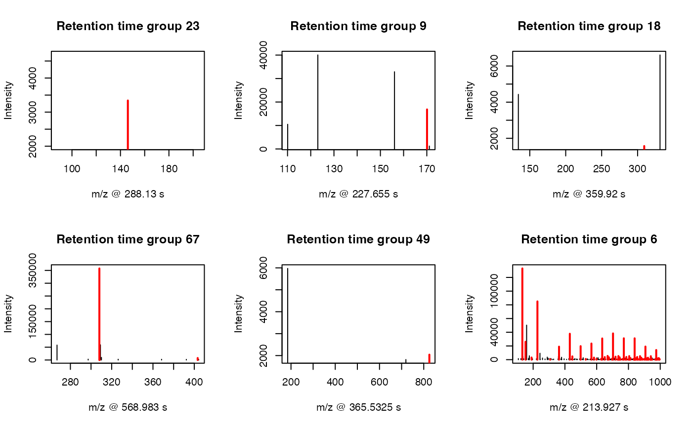
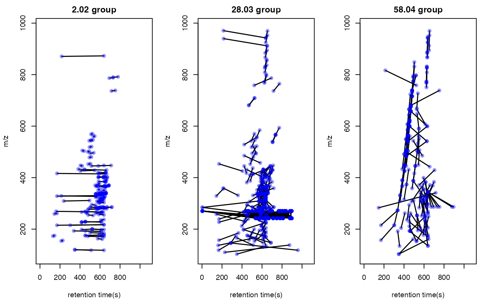

Paired Mass Distance(PMD) analysis for GC/LC-MS based non-targeted analysis
Miao Yu
2020-05-27
Source:vignettes/globalstd.Rmd
globalstd.RmdIntroduction of Paired Mass Distance analysis
pmd package use Paired Mass Distance (PMD) relationship to analysis the GC/LC-MS based non-targeted data. PMD means the distance between two masses or mass to charge ratios. In mass spectrometry, PMD would keep the same between two masses or two mass to charge ratios(m/z). There are twe kinds of PMD involved in this package: PMD within same retention time group and PMD from different retention time groups.
PMD within same retention time group
In GC/LC-MS based non-targeted analysis, peaks could be seperated by chromatograph. We could build retention time(RT) bins to assign peaks into different RT groups by retention time hierarchical clustering analysis. For each RT group, the peaks should come from same compounds or co-elutes. If certain PMD appeared in multiple RT groups, it would be related to the relationship about adducts, neutral loss, isotopologues or commen fragments ions.
PMD from different retention time groups
The peaks from different retention time groups would like to be different compounds seperated by chromatograph. The PMD would reflect the relationship about homologous series or chemical reactions.
GlobalStd algorithm use the PMD within same RT group to find independent peaks among certain dataset. Structure/reaction directed analysis use PMD from different RT groups to screen important compounds or reactions.
Data format
The input data should be a list object with at least two elements from a peaks list:
- mass to charge ratio with name of
mz, high resolution mass spectrometry is required - retention time with name of
rt
However, I suggested to add intensity and group information to the list for validation of PMD analysis.
In this package, a dataset from in vivo solid phase micro-extraction(SPME) was attached. This dataset contain 9 samples from 3 fish with triplicates samples for each fish. Here is the data strcture:
library(pmd) data("spmeinvivo") str(spmeinvivo) #> List of 4 #> $ data : num [1:1459, 1:9] 1095 10439 10154 2797 90211 ... #> ..- attr(*, "dimnames")=List of 2 #> .. ..$ : chr [1:1459] "100.1/170" "100.5/86" "101/85" "103.1/348" ... #> .. ..$ : chr [1:9] "1405_Fish1_F1" "1405_Fish1_F2" "1405_Fish1_F3" "1405_Fish2_F1" ... #> $ group:'data.frame': 9 obs. of 2 variables: #> ..$ sample_name : chr [1:9] "1405_Fish1_F1" "1405_Fish1_F2" "1405_Fish1_F3" "1405_Fish2_F1" ... #> ..$ sample_group: chr [1:9] "fish1" "fish1" "fish1" "fish2" ... #> $ mz : num [1:1459] 100 101 101 103 104 ... #> $ rt : num [1:1459] 170.2 86.3 84.9 348.1 48.8 ...
You could build this list object from the xcms objects via enviGCMS package. When you have a xcmsSet object or XCMSnExp object named xset, you could use enviGCMS::getmzrt(xset) or enviGCMS::getmzrt2(xset) to get such list. Of course you could build such list by yourself.
GlobalStd algorithm
GlobalStd algorithm try to find independent peaks among certain peaks list. The first step is retention time hierarchical clustering analysis. The second step is to find the relationship among adducts, neutral loss, isotopologues and commen fragments ions. The third step is to screen the independent peaks.
Retention time hierarchical clustering
pmd <- getpaired(spmeinvivo, rtcutoff = 10, ng = 10) #> 75 retention time cluster found. #> 380 paired masses found #> 9 unique within RT clusters high frequency PMD(s) used for further investigation. #> 719 isotopologue(s) related paired mass found. #> 492 multi-charger(s) related paired mass found. plotrtg(pmd)

This plot would show the distribution of RT groups. The rtcutoff in function getpaired could be used to set the cutoff of the distances in retention time hierarchical clustering analysis.
Relationship among adducts, neutral loss, isotopologues and commen fragments ions
The ng in function getpaired could be used to set cutoff of global PMD’s retention time group numbers. If ng is 10, at least 10 of the retention time groups should contain the shown PMD relationship. You could use plotpaired to show the distribution.
plotpaired(pmd)

You could also show the distribution of PMD relationship by index:
# show the unique PMD found by getpaired function for(i in 1:length(unique(pmd$paired$diff2))){ diff <- unique(pmd$paired$diff2)[i] index <- pmd$paired$diff2 == diff plotpaired(pmd,index) }


Screen the independent peaks
You could use getstd function to get the independent peaks.
std <- getstd(pmd) #> 8 retention group(s) have single peaks. 14 23 32 33 54 55 56 75 #> 11 group(s) with multiple peaks while no isotope/paired relationship 4 5 7 8 11 41 42 49 68 72 73 #> 9 group(s) with multiple peaks with isotope without paired relationship 2 9 22 26 52 62 64 66 70 #> 4 group(s) with paired relationship without isotope 1 10 15 18 #> 43 group(s) with paired relationship and isotope 3 6 12 13 16 17 19 20 21 24 25 27 28 29 30 31 34 35 36 37 38 39 40 43 44 45 46 47 48 50 51 53 57 58 59 60 61 63 65 67 69 71 74 #> 297 std mass found.
Here you could plot the peaks by plotstd function to show the distribution of independent peaks:
plotstd(std)

You could also plot the peaks distribution by assign a retention time group via plotstdrt:
par(mfrow = c(2,3)) plotstdrt(std,rtcluster = 23,main = 'Retention time group 23') plotstdrt(std,rtcluster = 9,main = 'Retention time group 9') plotstdrt(std,rtcluster = 18,main = 'Retention time group 18') plotstdrt(std,rtcluster = 67,main = 'Retention time group 67') plotstdrt(std,rtcluster = 49,main = 'Retention time group 49') plotstdrt(std,rtcluster = 6,main = 'Retention time group 6')

Use independent peaks for MS/MS validation
Independent peaks are supporsing generated from different compounds. We could use those peaks for MS/MS analysis instead of DIA or DDA. Here we need multiple injections for one sample since it might be impossible to get all ions’ fragmental ions in one injection with good sensitivity. You could use gettarget to generate the index for the injections and output the peaks for each run.
# you need retention time for independent peaks index <- gettarget(std$rt[std$stdmassindex]) #> You need 10 injections! # output the ions for each injection table(index) #> index #> 1 2 3 4 5 6 7 8 9 10 #> 36 21 24 30 26 45 35 28 31 21 # show the ions for the first injection std$mz[index==1] #> [1] 100.0763 100.5107 111.0203 132.0050 133.0794 136.0492 138.0549 139.9877 #> [9] 140.0600 146.1183 154.0586 158.9638 162.0558 162.1128 166.4658 168.0923 #> [17] 168.9988 170.1541 173.1335 174.1363 175.0873 180.1027 193.1597 205.1954 #> [25] 214.9181 220.1184 226.1822 226.9522 227.9565 228.9561 229.2008 236.9406 #> [33] 237.6615 244.1921 251.0476 252.0721 262.2258 263.2015 267.2693 270.3185 #> [41] 270.3185 270.3184 271.3217 271.9179 272.0665 274.8744 278.2482 283.2841 #> [49] 285.3002 286.3101 286.9218 293.1755 293.2853 295.1910 297.2985 299.9249 #> [57] 301.9077 305.3118 311.2560 322.3185 329.2492 334.3101 336.3259 337.1058 #> [65] 338.3435 339.3477 339.6388 342.0183 342.3637 355.0696 359.2410 362.3032 #> [73] 372.3197 372.3478 378.9015 386.3523 387.2851 390.2490 393.2990 394.4045 #> [81] 394.8754 399.2514 401.3421 409.1624 413.2660 414.2705 417.2462 418.9952 #> [89] 419.3165 421.2521 425.2153 426.2189 429.2404 431.1792 444.3844 453.3436 #> [97] 470.1010 479.2613 488.3591 492.8839 494.8112 494.8112 494.8113 502.3382 #> [105] 503.3190 520.2968 527.1586 532.3865 543.4015 544.3398 554.2887 563.1820 #> [113] 564.1885 565.3827 567.5729 568.3399 568.8923 576.4110 580.1907 590.3223 #> [121] 597.8743 599.4366 604.4152 607.4028 607.4262 611.1844 614.5358 616.4645 #> [129] 620.6167 629.8618 647.4366 665.4606 677.6839 681.4675 686.2013 689.8645 #> [137] 692.8343 695.5039 695.6533 703.6382 704.1390 714.4484 729.6484 731.8438 #> [145] 758.3546 758.4735 766.3701 776.2314 777.3853 780.8078 787.5110 788.5237 #> [153] 789.5260 793.5135 798.3265 811.5099 820.8196 825.3507 832.3212 836.3301 #> [161] 836.5243 839.1707 840.8392 841.8196 847.8263 861.5014 873.8334 889.8086 #> [169] 911.7489 917.7920 924.7999 925.7373 934.3019 938.7728 939.7749 948.8063 #> [177] 949.8072 979.7901 991.7894 998.1412 std$rt[index==1] #> [1] 170.1810 86.3490 86.1350 49.4910 212.6560 212.7820 511.2940 84.8490 #> [9] 511.0515 288.1300 212.6560 213.7130 430.6780 256.1585 144.0560 511.2940 #> [17] 135.4660 638.9930 611.4120 611.4135 511.2940 553.3400 614.2000 639.1010 #> [25] 76.9220 170.8240 416.1050 213.9270 213.7270 213.9650 614.6260 147.8960 #> [33] 639.6355 614.8420 605.8400 678.3130 556.7670 592.9810 633.3765 699.3160 #> [41] 823.9060 465.0070 699.9580 76.1710 141.0400 218.5540 559.5550 639.3120 #> [49] 716.7800 631.8770 146.5170 553.5540 618.2710 518.1520 639.3130 146.2780 #> [57] 144.1250 639.1000 585.6975 639.1000 596.4120 608.1990 594.9125 543.4380 #> [65] 639.1010 639.1000 639.0990 717.1025 658.6000 819.6220 213.7505 613.1270 #> [73] 659.8815 523.5950 215.8460 644.4580 492.8650 534.0100 659.6730 682.3135 #> [81] 217.1550 551.4100 632.8410 482.4185 665.0290 665.0280 444.6075 819.1920 #> [89] 687.9570 634.3425 601.3390 601.1275 665.0270 683.9940 582.4815 170.5045 #> [97] 717.1020 557.4110 540.8660 213.7130 772.2180 890.7680 862.5875 511.5080 #> [105] 440.2150 639.5820 142.3240 537.2240 439.2500 511.2270 512.7940 762.3630 #> [113] 762.5770 439.2500 735.7900 510.6510 213.7270 534.0090 762.3610 510.4370 #> [121] 213.2320 454.9350 529.9730 434.9630 613.5560 818.7650 639.0990 454.9350 #> [129] 618.4850 214.6170 527.7950 800.2900 638.8870 468.5430 883.0525 213.4215 #> [137] 215.8555 698.3510 639.3120 638.8855 639.1000 525.0080 594.5905 214.1480 #> [145] 213.5120 522.4370 462.0070 689.2450 474.2205 214.7290 692.6730 730.6470 #> [153] 730.8590 213.1700 213.7260 682.8535 215.2830 367.0375 213.5140 213.3740 #> [161] 698.2460 213.1200 213.9270 213.8945 214.7070 213.3395 213.5090 215.2605 #> [169] 650.4570 215.2080 214.9990 636.9560 213.6405 216.4125 215.9885 214.2010 #> [177] 214.6300 213.9410 215.3500 213.1700
Validation by principal components analysis(PCA)
You need to check the GlobalStd algorithm’s results by principal components analysis(PCA).
library(enviGCMS) par(mfrow = c(1,2),mar = c(4,4,2,1)+0.1) plotpca(std$data,lv = as.numeric(as.factor(std$group)),main = substitute(paste(italic('in vivo'), " SPME samples(all peaks)"))) plotpca(std$data[std$stdmassindex,],lv = as.numeric(as.factor(std$group)),main = substitute(paste(italic('in vivo'), " SPME samples(selected peaks)")))

Comparision with other packages
GlobalStd algorithm in pmd package could be treated as a method to extract pseudospectra. You could use getcluster to get peaks groups information for all GlobalStd peaks. This function would consider the merge of GlobalStd peaks when certain peak is involved in multiple clusters. Then you could choose export peaks with the highest intensities in each GlobalStd merged peaks groups.
stdcluster <- getcluster(std) # extract pseudospectra for std peak 71 idx <- unique(stdcluster$cluster$largei[stdcluster$cluster$i==71]) plot(stdcluster$cluster$mz[stdcluster$cluster$largei==idx],stdcluster$cluster$ins[stdcluster$cluster$largei==idx],type = 'h',xlab = 'm/z',ylab = 'intensity',main = 'pseudospectra for GlobalStd peak 71')

# export peaks with the highest intensities in each GlobalStd peaks groups. data <- stdcluster$data[stdcluster$stdmassindex2,]
You could also use getcorcluster to find peaks groups by correlation analysis only.
corcluster <- getcorcluster(spmeinvivo) #> 75 retention time cluster found. par(mfrow = c(1,3),mar = c(4,4,2,1)+0.1) plotpca(std$data,lv = as.numeric(as.factor(std$group)),main = substitute(paste(italic('in vivo'), " SPME samples(all peaks)"))) plotpca(std$data[std$stdmassindex,],lv = as.numeric(as.factor(std$group)),main = substitute(paste(italic('in vivo'), " SPME samples(selected peaks)"))) plotpca(std$data[corcluster$stdmassindex,],lv = as.numeric(as.factor(std$group)),main = substitute(paste(italic('in vivo'), " SPME samples(selected peaks by correlationship)")))

GlobalStd algorithm with intensity data
GlobalStd algorithm is designed to analysis data without intensity data. However, if you have intensity data, the independant peaks could be selected with more confindence. You could set up cutoff of Pearson Correlation Coefficient between peaks to refine the peaks selected by GlobalStd within same retention time groups.
std2 <- getstd(pmd,corcutoff = 0.9) #> 8 retention group(s) have single peaks. 14 23 32 33 54 55 56 75 #> 23 group(s) with multiple peaks while no isotope/paired relationship 2 4 5 7 8 10 11 15 18 26 35 39 41 42 49 50 59 62 68 69 70 72 73 #> 14 group(s) with multiple peaks with isotope without paired relationship 9 12 22 24 27 28 34 51 52 57 60 64 66 71 #> 3 group(s) with paired relationship without isotope 1 53 74 #> 27 group(s) with paired relationship and isotope 3 6 13 16 17 19 20 21 25 29 30 31 36 37 38 40 43 44 45 46 47 48 58 61 63 65 67 #> 120 std mass found. par(mfrow = c(1,3),mar = c(4,4,2,1)+0.1) plotpca(std2$data,lv = as.numeric(as.factor(std2$group)),main = substitute(paste(italic('in vivo'), " SPME samples(all peaks)"))) plotpca(std$data[std$stdmassindex,],lv = as.numeric(as.factor(std$group)),main = substitute(paste(italic('in vivo'), " SPME samples(selected peaks)"))) plotpca(std2$data[std2$stdmassindex,],lv = as.numeric(as.factor(std2$group)),main = substitute(paste(italic('in vivo'), " SPME samples(selected peaks)")))

Structure/Reaction directed analysis
getsda function could be used to perform Structure/reaction directed analysis. The cutoff of frequency is automately found by PMD network analysis with most cluster numbers.
sda <- getsda(std) #> PMD frequency cutoff is 6 by PMD network analysis with largest network average distance 5.99 . #> 57 groups were found as high frequency PMD group. #> 0 was found as high frequency PMD. #> 1.98 was found as high frequency PMD. #> 2.01 was found as high frequency PMD. #> 2.02 was found as high frequency PMD. #> 6.97 was found as high frequency PMD. #> 11.96 was found as high frequency PMD. #> 12 was found as high frequency PMD. #> 12.04 was found as high frequency PMD. #> 13.98 was found as high frequency PMD. #> 14.02 was found as high frequency PMD. #> 14.05 was found as high frequency PMD. #> 15.99 was found as high frequency PMD. #> 16.03 was found as high frequency PMD. #> 19.04 was found as high frequency PMD. #> 28.03 was found as high frequency PMD. #> 30.05 was found as high frequency PMD. #> 31.99 was found as high frequency PMD. #> 37.02 was found as high frequency PMD. #> 42.05 was found as high frequency PMD. #> 48.04 was found as high frequency PMD. #> 48.98 was found as high frequency PMD. #> 49.02 was found as high frequency PMD. #> 54.05 was found as high frequency PMD. #> 56.06 was found as high frequency PMD. #> 56.1 was found as high frequency PMD. #> 58.04 was found as high frequency PMD. #> 58.08 was found as high frequency PMD. #> 58.11 was found as high frequency PMD. #> 63.96 was found as high frequency PMD. #> 66.05 was found as high frequency PMD. #> 68.06 was found as high frequency PMD. #> 70.04 was found as high frequency PMD. #> 70.08 was found as high frequency PMD. #> 74.02 was found as high frequency PMD. #> 80.03 was found as high frequency PMD. #> 82.08 was found as high frequency PMD. #> 88.05 was found as high frequency PMD. #> 91.1 was found as high frequency PMD. #> 93.12 was found as high frequency PMD. #> 96.09 was found as high frequency PMD. #> 101.05 was found as high frequency PMD. #> 108.13 was found as high frequency PMD. #> 110.11 was found as high frequency PMD. #> 112.16 was found as high frequency PMD. #> 116.08 was found as high frequency PMD. #> 122.15 was found as high frequency PMD. #> 124.16 was found as high frequency PMD. #> 126.14 was found as high frequency PMD. #> 148.04 was found as high frequency PMD. #> 150.2 was found as high frequency PMD. #> 173.18 was found as high frequency PMD. #> 191.08 was found as high frequency PMD. #> 191.15 was found as high frequency PMD. #> 192.19 was found as high frequency PMD. #> 194.2 was found as high frequency PMD. #> 267.25 was found as high frequency PMD. #> 325.3 was found as high frequency PMD.
You could use plotstdsda to show the distribution of the selected paired peaks.
plotstdsda(sda)

You could also use index to show the distribution of certain PMDs.
par(mfrow = c(1,3),mar = c(4,4,2,1)+0.1) plotstdsda(sda,sda$sda$diff2 == 2.02) plotstdsda(sda,sda$sda$diff2 == 28.03) plotstdsda(sda,sda$sda$diff2 == 58.04)

Structure/reaction directed analysis could be directily performed on all the peaks, which is slow to process:
sdaall <- getsda(spmeinvivo) #> PMD frequency cutoff is 104 by PMD network analysis with largest network average distance 14.06 . #> 6 groups were found as high frequency PMD group. #> 0 was found as high frequency PMD. #> 2.02 was found as high frequency PMD. #> 28.03 was found as high frequency PMD. #> 31.01 was found as high frequency PMD. #> 58.04 was found as high frequency PMD. #> 116.08 was found as high frequency PMD. par(mfrow = c(1,3),mar = c(4,4,2,1)+0.1) plotstdsda(sdaall,sdaall$sda$diff2 == 2.02) plotstdsda(sdaall,sdaall$sda$diff2 == 28.03) plotstdsda(sdaall,sdaall$sda$diff2 == 58.04)

Structure/reaction directed analysis for peaks/compounds only
When you only have data of peaks without retention time or compounds list, structure/reaction directed analysis could also be done by getrda function.
sda <- getrda(spmeinvivo$mz[std$stdmassindex]) #> 38116 pmd found. #> 11 pmd used.
Structure/Reaction Network
One peak or compounds could be involved in multiple reactions. You could construct a network by such relationship.
If you have a specific compound and want to check the metabolites of certain PMD, you could use getchain to extract the network of that compounds
library(igraph) #> #> Attaching package: 'igraph' #> The following objects are masked from 'package:stats': #> #> decompose, spectrum #> The following object is masked from 'package:base': #> #> union # check metabolites of C18H39NO chain <- getchain(spmeinvivo,diff = c(2.02,14.02,15.99,58.04,13.98),mass = 286.3101,digits = 2,corcutoff = 0) # show as network net <- graph_from_data_frame(chain$sdac,directed = F) pal <- (grDevices::colorRampPalette(rev(RColorBrewer::brewer.pal(11,"RdYlBu") )))(5) plot(net,vertex.label=round(as.numeric(V(net)$name),2),vertex.size =5,edge.width = 5,edge.color = pal[as.numeric(as.factor(E(net)$diff2))],vertex.label.dist=1,vertex.color=ifelse(round(as.numeric(V(net)$name),4) %in% 286.3101,'red','black'),main = 'PMD network') legend("topright",bty = "n", legend=unique(E(net)$diff2), fill=unique(pal[as.numeric(as.factor(E(net)$diff2))]), border=NA,horiz = F)

If you want to see all the independant peaks’ high frequency PMDs as a network, the following code will help
sda <- getsda(std) #> PMD frequency cutoff is 6 by PMD network analysis with largest network average distance 5.99 . #> 57 groups were found as high frequency PMD group. #> 0 was found as high frequency PMD. #> 1.98 was found as high frequency PMD. #> 2.01 was found as high frequency PMD. #> 2.02 was found as high frequency PMD. #> 6.97 was found as high frequency PMD. #> 11.96 was found as high frequency PMD. #> 12 was found as high frequency PMD. #> 12.04 was found as high frequency PMD. #> 13.98 was found as high frequency PMD. #> 14.02 was found as high frequency PMD. #> 14.05 was found as high frequency PMD. #> 15.99 was found as high frequency PMD. #> 16.03 was found as high frequency PMD. #> 19.04 was found as high frequency PMD. #> 28.03 was found as high frequency PMD. #> 30.05 was found as high frequency PMD. #> 31.99 was found as high frequency PMD. #> 37.02 was found as high frequency PMD. #> 42.05 was found as high frequency PMD. #> 48.04 was found as high frequency PMD. #> 48.98 was found as high frequency PMD. #> 49.02 was found as high frequency PMD. #> 54.05 was found as high frequency PMD. #> 56.06 was found as high frequency PMD. #> 56.1 was found as high frequency PMD. #> 58.04 was found as high frequency PMD. #> 58.08 was found as high frequency PMD. #> 58.11 was found as high frequency PMD. #> 63.96 was found as high frequency PMD. #> 66.05 was found as high frequency PMD. #> 68.06 was found as high frequency PMD. #> 70.04 was found as high frequency PMD. #> 70.08 was found as high frequency PMD. #> 74.02 was found as high frequency PMD. #> 80.03 was found as high frequency PMD. #> 82.08 was found as high frequency PMD. #> 88.05 was found as high frequency PMD. #> 91.1 was found as high frequency PMD. #> 93.12 was found as high frequency PMD. #> 96.09 was found as high frequency PMD. #> 101.05 was found as high frequency PMD. #> 108.13 was found as high frequency PMD. #> 110.11 was found as high frequency PMD. #> 112.16 was found as high frequency PMD. #> 116.08 was found as high frequency PMD. #> 122.15 was found as high frequency PMD. #> 124.16 was found as high frequency PMD. #> 126.14 was found as high frequency PMD. #> 148.04 was found as high frequency PMD. #> 150.2 was found as high frequency PMD. #> 173.18 was found as high frequency PMD. #> 191.08 was found as high frequency PMD. #> 191.15 was found as high frequency PMD. #> 192.19 was found as high frequency PMD. #> 194.2 was found as high frequency PMD. #> 267.25 was found as high frequency PMD. #> 325.3 was found as high frequency PMD. df <- sda$sda net <- graph_from_data_frame(df,directed = F) pal <- (grDevices::colorRampPalette(rev(RColorBrewer::brewer.pal(11,"RdYlBu") )))(length(unique(E(net)$diff2))) plot(net,vertex.label=round(as.numeric(V(net)$name)),vertex.size = 7,edge.width = 5,edge.color = pal[as.numeric(as.factor(E(net)$diff2))],main = 'PMD network') legend("topright",bty = "n", legend=unique(E(net)$diff2), fill=unique(pal[as.numeric(as.factor(E(net)$diff2))]), border=NA,horiz = F)

# Check the degree of the nodes # Show the degree distribution of the vertices deg <- degree(net, mode="all") degree_distribution(net) #> [1] 0.000000000 0.280612245 0.163265306 0.096938776 0.102040816 0.076530612 #> [7] 0.025510204 0.020408163 0.020408163 0.020408163 0.010204082 0.020408163 #> [13] 0.020408163 0.030612245 0.010204082 0.020408163 0.000000000 0.010204082 #> [19] 0.005102041 0.020408163 0.000000000 0.000000000 0.015306122 0.000000000 #> [25] 0.000000000 0.010204082 0.005102041 0.005102041 0.005102041 0.000000000 #> [31] 0.000000000 0.000000000 0.000000000 0.000000000 0.000000000 0.000000000 #> [37] 0.000000000 0.000000000 0.000000000 0.000000000 0.000000000 0.000000000 #> [43] 0.000000000 0.000000000 0.000000000 0.000000000 0.000000000 0.000000000 #> [49] 0.000000000 0.000000000 0.000000000 0.000000000 0.000000000 0.000000000 #> [55] 0.000000000 0.000000000 0.000000000 0.000000000 0.000000000 0.000000000 #> [61] 0.000000000 0.000000000 0.000000000 0.000000000 0.000000000 0.000000000 #> [67] 0.000000000 0.000000000 0.000000000 0.000000000 0.000000000 0.000000000 #> [73] 0.000000000 0.000000000 0.000000000 0.000000000 0.000000000 0.000000000 #> [79] 0.005102041 plot(net, vertex.size=deg/2,vertex.label=NA,vertex.size = 7, edge.width = 5)

# network community structure detection ceb <- cluster_edge_betweenness(net,weights = abs(E(net)$cor), directed = F) #> Warning in cluster_edge_betweenness(net, weights = abs(E(net)$cor), directed = #> F): At community.c:460 :Membership vector will be selected based on the lowest #> modularity score. #> Warning in cluster_edge_betweenness(net, weights = abs(E(net)$cor), directed = #> F): At community.c:467 :Modularity calculation with weighted edge betweenness #> community detection might not make sense -- modularity treats edge weights as #> similarities while edge betwenness treats them as distances plot(ceb, net,vertex.label=NA,)

Source appointment
Peaks from samples could be from endogenous compounds or exogenous compounds. However, it’s hard to tell for untargeted analysis. In terms of PMD, if one peak belongs to a high frequency PMD network, it means a relatively high activity. If such sample belongs to a biological specimen, it might be endogenous compound. If a peak show no PMD network with other peaks, the biological system might not have enzyme to make reaction happen. Exogenous compounds will show a lower degree since they are xenbiotics. Since most of the peaks will show a low degree, the median of the degree could be used as cutoff. Then we could make source appointment if the assumption is hold.
median(deg) #> [1] 3 endogenous <- names(deg)[deg>median(deg)] exogenous <- names(deg)[deg<=median(deg)]
In this case, we will have 90 endogenous compounds while 106 exogenous compounds. When you find a peak show differences between groups, you could check the degree to infer its sources.
Parameters selection
Retention time cluster cutoff should fit the peak picking algorithm. For HPLC, 10 is suggested and 5 could be used for UPLC.
Global PMD’s retention time group numbers should be around 20 percent of the retention time cluster numbers. For example, if you find 100 retention time clusters, I suggested you use 20 as the empirical global PMD’s retention time group numbers.
Another important hint is that pre-filter your peak list by black samples or other quality control samples. Otherwise the running time would be long and lots of pmd relationship would be just from noise.
Wrap function
globalstd function is a wrap function to process GlobalStd algorithm and structure/reaction directed analysis in one line. All the plot function could be directly used on the list objects from globalstd function.
result <- globalstd(spmeinvivo,ng=10) #> 75 retention time cluster found. #> 380 paired masses found #> 9 unique within RT clusters high frequency PMD(s) used for further investigation. #> 719 isotopologue(s) related paired mass found. #> 492 multi-charger(s) related paired mass found. #> 8 retention group(s) have single peaks. 14 23 32 33 54 55 56 75 #> 11 group(s) with multiple peaks while no isotope/paired relationship 4 5 7 8 11 41 42 49 68 72 73 #> 9 group(s) with multiple peaks with isotope without paired relationship 2 9 22 26 52 62 64 66 70 #> 4 group(s) with paired relationship without isotope 1 10 15 18 #> 43 group(s) with paired relationship and isotope 3 6 12 13 16 17 19 20 21 24 25 27 28 29 30 31 34 35 36 37 38 39 40 43 44 45 46 47 48 50 51 53 57 58 59 60 61 63 65 67 69 71 74 #> 297 std mass found. #> PMD frequency cutoff is 6 by PMD network analysis with largest network average distance 5.99 . #> 57 groups were found as high frequency PMD group. #> 0 was found as high frequency PMD. #> 1.98 was found as high frequency PMD. #> 2.01 was found as high frequency PMD. #> 2.02 was found as high frequency PMD. #> 6.97 was found as high frequency PMD. #> 11.96 was found as high frequency PMD. #> 12 was found as high frequency PMD. #> 12.04 was found as high frequency PMD. #> 13.98 was found as high frequency PMD. #> 14.02 was found as high frequency PMD. #> 14.05 was found as high frequency PMD. #> 15.99 was found as high frequency PMD. #> 16.03 was found as high frequency PMD. #> 19.04 was found as high frequency PMD. #> 28.03 was found as high frequency PMD. #> 30.05 was found as high frequency PMD. #> 31.99 was found as high frequency PMD. #> 37.02 was found as high frequency PMD. #> 42.05 was found as high frequency PMD. #> 48.04 was found as high frequency PMD. #> 48.98 was found as high frequency PMD. #> 49.02 was found as high frequency PMD. #> 54.05 was found as high frequency PMD. #> 56.06 was found as high frequency PMD. #> 56.1 was found as high frequency PMD. #> 58.04 was found as high frequency PMD. #> 58.08 was found as high frequency PMD. #> 58.11 was found as high frequency PMD. #> 63.96 was found as high frequency PMD. #> 66.05 was found as high frequency PMD. #> 68.06 was found as high frequency PMD. #> 70.04 was found as high frequency PMD. #> 70.08 was found as high frequency PMD. #> 74.02 was found as high frequency PMD. #> 80.03 was found as high frequency PMD. #> 82.08 was found as high frequency PMD. #> 88.05 was found as high frequency PMD. #> 91.1 was found as high frequency PMD. #> 93.12 was found as high frequency PMD. #> 96.09 was found as high frequency PMD. #> 101.05 was found as high frequency PMD. #> 108.13 was found as high frequency PMD. #> 110.11 was found as high frequency PMD. #> 112.16 was found as high frequency PMD. #> 116.08 was found as high frequency PMD. #> 122.15 was found as high frequency PMD. #> 124.16 was found as high frequency PMD. #> 126.14 was found as high frequency PMD. #> 148.04 was found as high frequency PMD. #> 150.2 was found as high frequency PMD. #> 173.18 was found as high frequency PMD. #> 191.08 was found as high frequency PMD. #> 191.15 was found as high frequency PMD. #> 192.19 was found as high frequency PMD. #> 194.2 was found as high frequency PMD. #> 267.25 was found as high frequency PMD. #> 325.3 was found as high frequency PMD.
Shiny application
An interactive document has been included in this package to perform PMD analysis. You need to prepare a csv file with m/z and retention time of peaks. Such csv file could be generated by run enviGCMS::getmzrtcsv() on the list object from enviGCMS::getmzrt(xset) or enviGCMS::getmzrt2(xset) function. You could also generate the csv file by enviGCMS::getmzrt(xset,name = 'test') or enviGCMS::getmzrt2(xset, name = 'test'). You will find the csv file in the working dictionary named test.csv.
Then you could run runPMD() to start the Graphical user interface(GUI) for GlobalStd algorithm and structure/reaction directed analysis. The PMD network for certain compound could be generated by run runPMDnet().
Database
To check the pmd reaction database:
# all reaction data("omics") head(omics) #> X KEGG RHEA_ID DIRECTION MASTER_ID ec ecocyc macie #> 1 1 R00001 22455 BI 22452 <NA> <NA> <NA> #> 2 2 R00004 24579 BI 24576 <NA> <NA> <NA> #> 3 3 R00005 19032 BI 19029 <NA> <NA> <NA> #> 4 4 R00008 22751 BI 22748 <NA> <NA> <NA> #> 5 5 R00009 20312 BI 20309 <NA> <NA> <NA> #> 6 6 R00010 20871 BI 20868 <NA> <NA> <NA> #> metacyc reactome #> 1 ENDOPOLYPHOSPHATASE-RXN <NA> #> 2 INORGPYROPHOSPHAT-RXN <NA> #> 3 <NA> <NA> #> 4 <NA> <NA> #> 5 <NA> <NA> #> 6 <NA> <NA> #> compounds pmd #> 1 [phosphate](n+1) + n H2O <=> n H(+) + (n+1) phosphate NA #> 2 diphosphate + H2O <=> H(+) + 2 phosphate NA #> 3 3 H(+) + H2O + urea-1-carboxylate <=> 2 CO2 + 2 NH4(+) NA #> 4 4-hydroxy-4-methyl-2-oxoglutarate <=> 2 pyruvate NA #> 5 2 H2O2 <=> 2 H2O + O2 NA #> 6 alpha,alpha-trehalose + H2O <=> 2 D-glucose 162.053 # kegg reaction data("keggrall") head(keggrall) #> ID ms1 formula1 ms2 formula2 pmd C H O N P #> 2 R00002 506.9957 C10H16N5O13P3 427.0294 C10H15N5O10P2 79.966 0 1 3 0 1 #> 8 R00010 342.1162 C12H22O11 180.0634 C6H12O6 162.053 6 10 5 0 0 #> 10 R00012 522.9907 C10H16N5O14P3 868.0381 C20H28N10O21P4 345.047 10 12 7 5 1 #> 12 R00014 425.0450 C12H19N4O7P2S 469.0712 C14H23N4O8P2S 44.026 2 4 1 0 0 #> 13.1 R00015 342.1162 C12H22O11 180.0634 C6H12O6 162.053 6 10 5 0 0 #> 13.2 R00015 342.1162 C12H22O11 504.1690 C18H32O16 162.053 6 10 5 0 0 #> S #> 2 0 #> 8 0 #> 10 0 #> 12 0 #> 13.1 0 #> 13.2 0 # literature reaction for mass spectrometry data("sda") head(sda) #> PMD origin #> 1 0.984016 OH ↔ NH2, e.g. de-amidiation, CHNO compounds #> 2 1.995663 F ↔ OH, halogen exchange with hydroxy group (typically -F + OH) #> 3 2.015650 ± 2H, opening or forming of double bond #> 4 7.004671 F ↔ CN, halogen exchange with cyano group #> 5 8.965779 Cl ↔ CN, halogen exchange with cyano group #> 6 13.979265 O ↔ 2H, e.g. Oxidation follwed by H2O elimination #> Ref. mode #> 1 https://doi.org/10.1016/S1044-0305(99)00090-2 both #> 2 https://doi.org/10.1016/S1044-0305(99)00090-2 both #> 3 https://doi.org/10.1016/S1044-0305(99)00090-2 both #> 4 https://doi.org/10.1016/S1044-0305(99)00090-2 both #> 5 https://doi.org/10.1016/S1044-0305(99)00090-2 both #> 6 https://doi.org/10.1016/S1044-0305(99)00090-2 both
To check the HMDB pmd database: